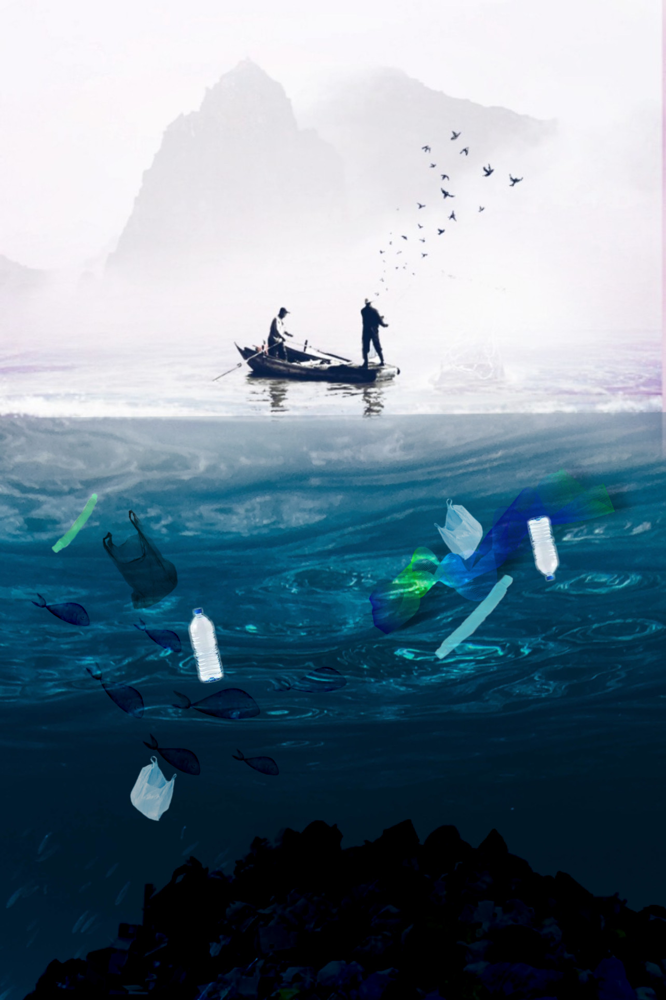
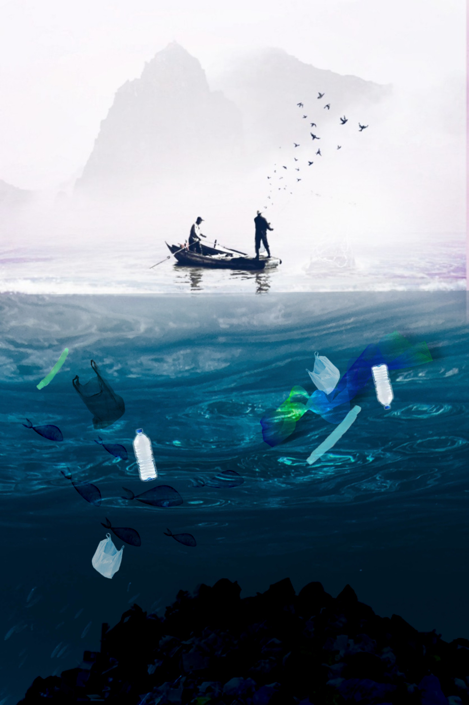

Hour Zer0
by Angel Zheng
 

Artist Statement
Hanjing (Angel) Zheng was born in China and immigrated to the United States at the age of 7. Angel’s family moved to the states to provide a better future for the family, leaving everything they knew behind. English is Angel’s third language, leaving a gap of communication that Angel found filled by photographs. A picture tells a million words and when Angel found photography, it was like finding the missing piece she finally needed to capture her thoughts and share them with others. Angel particularly enjoys shooting high fashion editorials and portrait photography. Angel’s past works dealt a lot with our current screen based society and its relationship to the world of image-making. Angel examines our society’s performance behind the theme of social images.
Angel currently owns music studios throughout New York City, runs a blog (www.welldressedwellfedblog.com) and a clothing brand (www.izi.com). She works in both digital and analog photography, loves exploring the world, and good food, which is all documented in her blog. She currently lives in New York City with her bunny Mochi.
Project Statement
Climate change is one of the biggest problems we have as a human face. We are destroying our home day by day with no regards for the future. Most of the people on earth now spend day in and day out giving very little thought to our planet’s desperate cry for help. Most of the people on earth right now are basically ignoring this issue because it's far from their direct field of interest. But climate change is something that affects every single person on earth regardless of where they live. It affects your family, your friends and yourself. Climate change is something happening now, not something we can put off worrying about until some point in the future.
Climate change is accelerating the rapid destruction of our planet. Scientists predict the Arctic Ocean will be ice free in summer within decades, leading to massive sea-level rise. Already some of the most heavily populated areas on earth are being flooded by rising sea levels, causing humanitarian crisis around the globe
This series of photographs and audio interviews explores the future of our planet as a whole. As a collective, we need to take better care of our planet. As we approach the end of my capstone, I wanted to share a bit of what I learned while working on this project. For over two years, I have started to interview the people I meet about their thoughts on climate change, its effects on their lives, and what we can do to fix it. Most people I have spoken with are very concerned about the impact climate change will have on their communities and the world as a whole.
We are almost to Hour Zer0 and once we reach that point of no return, there is no way to save our Earth for the coming generations.